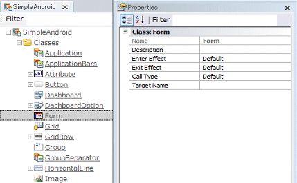
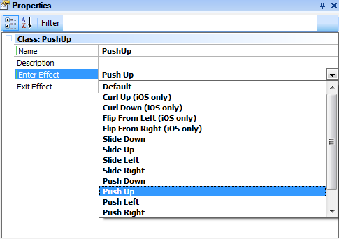
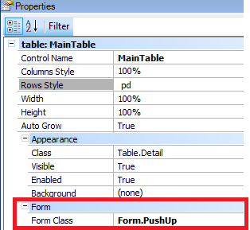

HowTo: Using Transitions in Mobile applications
User Experience and User Interface are very important aspects of today's mobile applications. Users are going to like or dislike our apps by the way they interact with them, so our goal is to make them feel good using our app and make it look as nice as we can. This is why we've incorporated the possibility to use Transitions when calling Objects for mobile applications development. InformationThe Transitions that can be used in GeneXus Mobile applications are as follows:
Important facts1. Some effects are only supported by the iOS platform. 2. The Default value in iOS is different depending how the panel is invoked. For Example: 3. The default value for Android may vary depending on OS Version and Device Manufacturer. 4. If an effect that is only supported by iOS is executed on an Android app, the effect displayed will be the Default Android effect. 5. Some Exit Effects do not work if they are executed one after the other. For example: Slide Up - Slide Down 6. Transitions can be modified at runtime using CallOptions. Example in GeneXusTo add this feature to a GeneXus Mobile Application follow these steps: a. The first step is to check the Form Class in the Theme with its properties and values:  b. As you can see, this class and its subclasses allow picking an Enter Effect and an Exit Effect for a Form. The effects that can be chosen are those listed above. The Enter Effect will be the effect displayed on the screen when the panel is invoked. On the other hand, the Exit Effect will be the effect displayed on the screen when the current panel returns to the previous panel. Remember that when Returning to a panel, the screen effect will be the Exit Effect of the current panel, not the Enter Effect of the target panel. Also, when setting an Enter Effect its opposite will be automatically set as the Exit Effect. However, you can change the Exit Effect for any of the lists.  c. Set the property Form Class in the Layout of an object for Mobile apps.  ConsiderationsUp to GeneXus X Evolution 2 Upgrade 4 the "Exit Effect" property was called "Close Effect". Videos
|